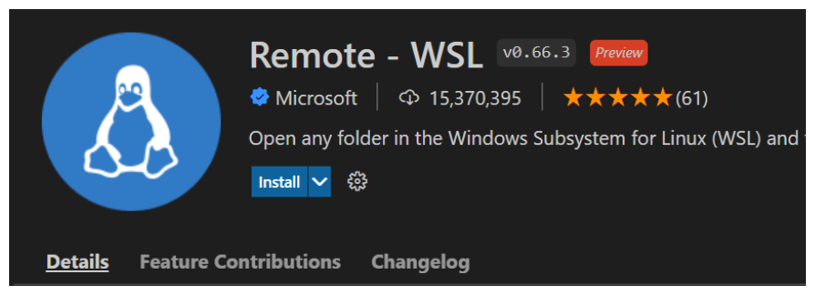

Windows Subsystem for Linux
Instructions for Windows users to connect VSCode to the Windows Subsystem for Linux.
Windows Subsystem for Linux 2 (or WSL2) should already have been installed as part of the Docker Desktop install that was done in Docker Desktop.
WSL2 is a Linux distribution that runs inside of Windows. It allows us to make
the tutorials look exactly the same for Windows, Linux and MacOS.
The linux command line in Ubuntu Linux inside WSL2 is called bash and
is easier to use than Windows equivalents.
Adding the WSL2 extension
First we need the WSL2 extension for VSCode. Go to https://marketplace.visualstudio.com/items?itemName=ms-vscode-remote.remote-wsl and click the ‘Install’ button.
You will be prompted with a dialog, click on the button that reads
Open Visual Studio Code.
VSCode will launch and you will see information on the extension that looks like this:
{kind=link}
Click the install button and you now have the extension installed.
Connecting to WSL2
On the left bar of VSCode there is a remote connections Icon.
Click the the remote connection Icon
If there is a dropdown then choose ‘WSL Targets’ (you wont see this if WSL is the only remote target installed)
Right click on your Ubuntu installation and choose ‘Connect to WSL’
{kind=link}
Continue with tutorial
You can now continue with the main tutorial. If you do everything through vscode then the tutorials will work exactly the same for Windows as for a linux computer.